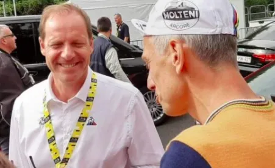
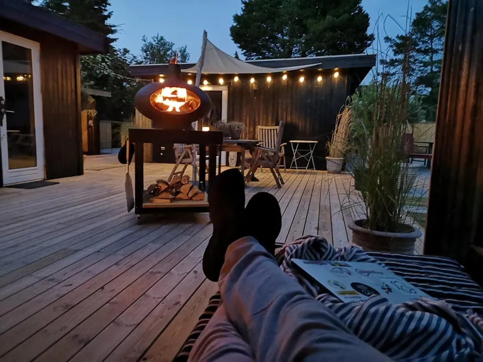

18. etape: Aalespurten – FORZA MAXTENI

Glem alt om paradekørsel med champagneglas. Glem alt om Avenue des Champs-Élysées i Paris, Via Rom i Milano og Frederiksberg Allé. Tour de Denmark sluttede af med en spektakulær højhastighedsetape – den Strava-klassiske segmentetape Aalespurten fra Hjortsvang på 2,82 km.
Max Maxteni Nielsen vinder ikke uventet Aalespurten – men også sammenlagt Tour de Denmark.

Han har ligget og gemt sig nede i feltet. Ja, på et tidspunkt var han en endda en alvorlig trussel til Pelle Clemmesen og Jesper Victor Larsen i hviledagsklassementet. Men alle ved jo, at Max er bedst i 3. uge af en grand tour. Og man kan da rolig sige, at Max kom stærkt bagfra og snuppede sejren foran alle favoritterne. Max var ikke engang at finde i totalisatorspillet i Uldum Kiosk.
Ja, det er rigtigt. Jeg har altid været lidt sløv i optrækket. Og det er ikke belvet bedre med alderen. Men når først jeg får gang i den helt stærke tobak nederst i tobaksdåsen, så sker der ting og sager…, afslører Max Nielsen.
Kendt højhastigheds-strava-etape

Det er ikke tilfældigt, at den afsluttende etape Aalespurten, er valgt så den afsluttende etape i Tour de Denmark. Der er tale om en etape fra øverste hylde. I kredse med forstand på nymodens satellit-rutetidtagning, ved alle, at Aalespurten fra Hjortsvang er én af de fineste segmenter at eje. Kongen af Aalespurten fra Hjortsvang er heller ikke en hvem som helst. Det ingen ringere end EM, VM og OL vinderen Lasse Norman Hansen.

Kongens fald
Men i dag blev det Kongens fald. Én efter én blev rytterne send afsted. Aalespurten bliver kørt med “flyvende start“, som nymodens satellit-rutetidtagnings-segmenter nu engang gør. Og der blev sat nogle fornuftige tider. Ikke uventet lå Grane Maaløe længe med bedste tid (03.01 min). Men da det blev Max Nielsens tur, faldt hammeren.
Et øjeblik troede jeg det var begyndt at tordne. Men så opdagede jeg, at det var Max, der passerede målstregen. Jeg har aldrig set en cykel blive straffet så vildt. Hjul og stel svajede fra side til side, og lodninger skreg om hjælp, fortæller en målløs Grane Maaløe.
Max Nielsen kørte de 2,82 km i tiden 2:29. Satellit-rutetidtagnings-segment-kontrollanten fra Strava troede ikke på resultatet. Han stod lamslået i flere minutter og gloede på sin iPad og mumlede:
Det kan da ikke passe. Det kan da ikke passe – og så på stål og i uld.
Hemmeligheden bag det hele
Men selvfølgelig kan det passe. Også selvom Strava foreløbig har nægtet at lægge resultatet op på deres hjemmeside. For hemmeligheden bag det hele, er udover en hulens masse kræfter i stængerne, at Max er begyndt at smøre kæden med hjemmekogt svinefedt. Dét gør, at kæden har en latterlig lille modstand. Bivirkningen er dog, at Max’s cykel fortiden lugter af varm fritureolie.
Ikke siden jeg blev dansk mester i U23 – og det er jo et par år og kilo siden – har jeg haft så meget fart i cyklen, griner Max, som for øvrigt er gået tilbage til sin gamle diæt fra dengang han vandt cykelløb i Belgien – nemlig Matadormix og Cola lige inden et løb.
Ikke kun vinderen tager det hele
Max Nielsen er naturligvis glad for sin Aalespurtsejr – og den samlede sejr i Tour de Denmark. Men det er ikke kun vinderen der tager det hele. Direktøren for Tour de France, Christian Prudhomme var nemlig mødt frem til Aale. Udover at overveje om Tour de France skal have Aalespurten ind som ekstra etape i 2021, så kom Prudhomme med den endelige wildcard-kontrakt til Squadra Molteni.


Det er rigtig flot, at Prudhomme nu kommer med kontrakt og det hele. Men ærlig talt, så har vi efter vores totale dominans i Tour de Denmark fået så mange tilbud fra andre store løb, at vi lige skal overveje det en ekstra gang, fortæller økonomiansvarlig og løjtnant Kasper Sørensen.
Men det er godt for holdet, at vores markedsværdig er steget så meget. Så nu kan Grane godt begynde at se sig om efter en ny brugt 4-trins gearkasse til HY’en.
Brooklyn vinder hviledagsklassementet
Mens Max Nielsen med sejren på 18. etape kørte sig til en samlet sejr i Tour de Danmark blev også hviledagskkassementet afgjort. Her stod kampen mellem Jesper Viktor Larsen, der på 14. etape kom i den blå housecoat via en snedig lynvisit til det rigtige klassement, og Pelle Clemmensen. På sidste etape tog Jesper Viktor endnu en taktisk manøvre hjemme fra terrassekøjen. Som hviledagsklassementets leder og capitaine de route beordrede han via telegram til de øvrige i klassementet gruppetto fra etapens start. En instruks der blev fulgt af både Pelle, resterne af Team K-Werk og selvfølgelig de øvrige Brooklyn-ryttere. Dermed låste Jesper klassementet fra etapens begyndelse.


På holdet havde vi allerede efter formiddagsluren aftalt, at det gjaldt om at få lavet gruppetto fra start og så holde et søvnigt øje på, at ingen andre lavede numre og pludselig faldt i søvn og dermed kunne tage point. Og den taktik holdt hele dagen.
Tak til alle der har fulgt Tour de Denmark og Squadra Molteni de sidste 3 uger. Uden jeres støtte havde vi aldrig klaret det…
God sommer 🙂
FORZA MAXTENI
FORZA MOLTENI
FORZA TOUR DE DENMARK
18. etape: Aalespurten
1. Max Nielsen, Squadra Molteni
Tour de Denmark – Det endelige klassement:
1. Max Nielsen, Squadra Molteni
2. Kristian Blume, Squadra Molteni
3. Niels Bjørnsteen, Squadra Molteni
4. Carsten Jacobsen, Squadra Molteni
5. Jens Langergaard, Squadra Molteni
6. Svend Seegert, Squadra Molteni
7. Jeppe Thiemer, Squadra Molteni
8. Grane Wunderbein Maaløe, Squadra Molteni
9. Jens Stærk Bojesen, Squadra Molteni
10. Lars Munch Larsen, Squadra Molteni
11. Per Sandahl, Squadra Molteni
DQ Morten Mejsen, Peugeot Re-Cycled
Hviledags-klassement:
1. Jesper ”de Vlaeminck” Viktor Larsen, Brooklyn
2. Pelle Clemmesen, Peugeot Re-Cycled
Hold:
1. Squadra Molteni
2. Peugeot Re-Cycled